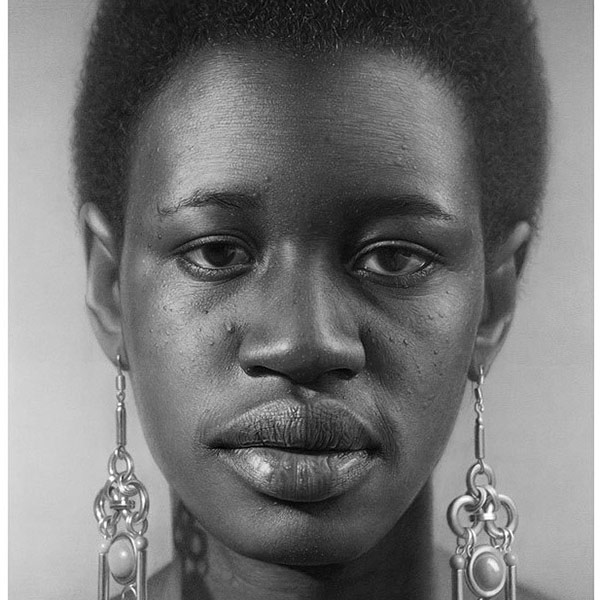

Dirk Dzimirsky is a German artist who is known for his hyper-realistic drawings and paintings of people. He says, "My artworks are done in a hyper-realistic style which is characterized by translating photographs into drawing and paintings with extreme attention to detail and an exaggeration of reality."